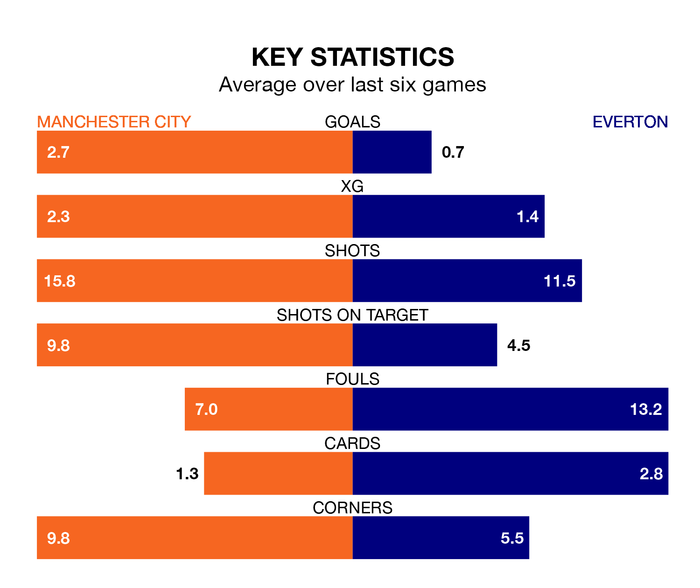

Two of the Premier League's meanest defences go head-to-head at the Etihad Stadium on Saturday, when Manchester City host Everton.
Only two sides – Arsenal and Liverpool – have conceded fewer goals than City to date: the home side have let in just 25 goals in 22 games.
The Toffees have conceded 30 goals in 23 games, giving them the joint-fourth tightest back line so far this season.
Key to the Citizens's home form has been Ederson, who has allowed 0.9 goals past him per 90 minutes, compared to 1.26 for Jordan Pickford in the opposite net.
In Erling Haaland, City have the league's most on-form striker so far this season. He has notched 14 goals in 17 appearances.
His goal rate of one every 100 minutes is much quicker than that of Abdoulaye Doucouré, Everton's top scorer with a goal every 256 minutes, and a total of six goals in 18 games.
The Citizens are second in the table after 22 games, of which they have won 15 and drawn four, earning 49 points.
The Toffees are 10 places behind the home side in 12th, with eight wins and five draws putting them on 29 points.
City are in fantastic form in the Premier League, with five wins and a draw from their last six games.
With no wins and three draws over that period, the visitors' form is much worse – they have taken three points from 18, compared to City's 16.
In the last 10 years, City and Everton have played each other on 23 occasions. City won 16 of them, Everton two, and they drew five times.
On average, the Citizens scored 2.0 goals and the Toffees 0.8 in those matches.
Their last meeting was on December 27, when City won 3-1 away.
City's last match was on Monday, a 3-1 win against Brentford, with Phil Foden getting the goals for the Citizens.
Everton drew 2-2 with Tottenham Hotspur last time out, on February 3, with Jack Harrison and Jarrad Branthwaite on the scoresheet.
Updated: 10:01 (UTC), 06/02/24